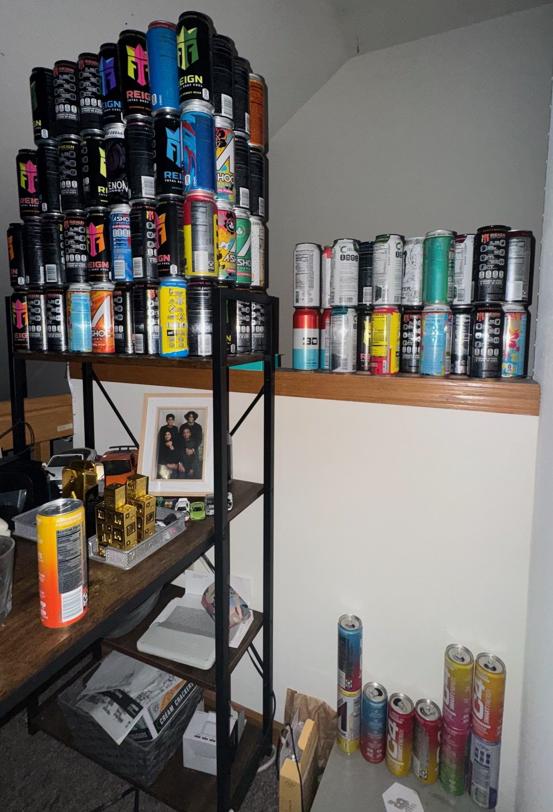

This project uses a machine learning model to classify energy drink brands based on images of their cans. By training a model with Teachable Machine, we can predict the brand of an energy drink based on an image you hold up in front of a camera.
The goal of this project is to build a machine learning model that can recognize and classify different brands of energy drinks. Using Google’s Teachable Machine, I trained a classifier by taking photos of different labeled energy drink cans, such as Reign, Ashoc, C4, 3D and Celsius. The trained model uses these images to predict the brand of an energy drink when an image is provided. This project involves both machine learning and practical application of image classification techniques.
In this project, I embarked on a journey to build a machine learning model that could classify energy drink brands based on images of their cans. The model was created using Teachable Machine, a tool developed by Google’s Creative Lab that allows for easy training of machine learning models using your own datasets. Through this process, I trained the model on various images of energy drink cans from brands such as Reign, Ashoc, C4, 3D and Celsius to identify these brands when new images were presented. The project itself was not only a technical challenge but also a deep dive into the ethical implications of machine learning, particularly around transparency, biases in datasets, and the power dynamics at play when AI is deployed in real-world scenarios. These themes, which are thoroughly discussed in Joy Buolamwini’s Unmasking AI, were crucial in shaping how I approached the design and implementation of this classifier.
The first step in creating the energy drink brand classifier was collecting a diverse set of labeled images. Luckily for me I have a collection of 100+ cans of different varieities in my room so I opted to have 5 different types of them to be identified. The importance of diversity in the dataset was emphasized by Buolamwini, who discussed how biases in AI models often stem from skewed datasets. For example, a dataset that is not diverse enough may lead to a model that performs poorly for certain groups or types of data. In my case, ensuring that I had a wide assortment of variations as cans change with flavor so i opted to have as many flavors as i had available for each. This was crucial to making sure the model could generalize well to new, unseen data. Once the images were collected, I uploaded them into Teachable Machine and trained the model using the pre-configured image classification tools. This was done by manually labeling each image with the corresponding brand. This labeled dataset would then be used to train the machine learning model to recognize patterns associated with each brand’s packaging and logo. After training the model, I tested it by uploading new images and showing cans to the camera and evaluating its predictions.
In Unmasking AI, Joy Buolamwini examines how AI systems can reflect and perpetuate sociocultural inequalities, especially when datasets lack diversity or transparency. Several key lessons from Buolamwini's work deeply influenced the design and evaluation of my energy drink brand classifier. Buolamwini highlights how biased datasets can lead to flawed AI systems, citing examples where facial recognition models performed poorly on people of color due to an overrepresentation of lighter-skinned faces (Buolamwini, Unmasking AI, p. 66). In my project, I realized that my dataset might reflect similar biases. For example, if the model was trained with 100 images of C4 cans but only 10 images of Reign cans, the classifier tended to favor the more frequently represented brand. This imbalance mirrors Buolamwini's critique of dataset skew and demonstrates the need for balanced training data to prevent systemic bias (Buolamwini, Unmasking AI, p. 89). Buolamwini argues that "without transparency, there is no accountability" (Unmasking AI, p. 153). Applying this principle to my project, I recognized the importance of making my dataset and training process transparent. Currently, the dataset is stored within Teachable Machine, but to align with Buolamwini's call for openness, I plan to make the dataset accessible via a public repository(GitHub), which includes the image to the left. This would allow others to understand the data used, test the model's performance, and identify potential biases. Buolamwini emphasizes the importance of acknowledging AI model failures to build fairer systems, noting that "when failures go unexamined, they become the seeds of future harm" (Unmasking AI, p. 178). In my project, the model produced false positives when images were too similar or when background noise interfered. Recognizing these failures helped me understand the need for more diverse data and iterative testing—a practice Buolamwini advocates to ensure AI systems perform reliably across varied inputs. Her research also highlights how AI models trained on similar datasets risk reinforcing inequality (Unmasking AI, p. 115). To address this, I made a conscious effort to include images of different can designs and flavors to ensure the model could generalize better. This aligns with Buolamwini's principle that diverse, representative datasets are important in creating fair and unbiased AI systems. By applying these lessons, my project aims to reflect Buolamwini's advocacy for fair, transparent, and accountable AI development. This process not only improved the classifier but also deepened my understanding of the ethical implications of deploying AI in real-world applications.
One of the major challenges I encountered during this project was ensuring that the machine learning model did not overfit. Overfitting occurs when a model is too closely tied to the training data and performs poorly on new, unseen data. To mitigate this risk, I made sure to use a variety of flavors, with different variations in packaging. Buolamwini’s work emphasizes the risks of overfitting in AI systems, especially when they are deployed in real-world scenarios where the input data is unpredictable and varied. This lesson from Unmasking AI reinforced the need for a robust and generalized model. Moreover, training the model and ensuring its accuracy was a time-consuming process, as it involved not only refining the model but also iterating on the images and dataset itself. In the image above, you can see a dataset with thousands of images with 7 different classes(Fun fact: The testing not only took too long, but also made the website crash), which demonstrated that even the dataset was a factor in how well the TM was able to train. This process was marked by multiple rounds of testing and feedback, which closely mirrors the iterative process that Buolamwini advocates for in her work, where AI models are continuously improved and evaluated to prevent unintended consequences.
Throughout the development of this project, I also had to consider the ethical implications of using machine learning and AI. Buolamwini’s book draws attention to the importance of fairness in AI, and this was something I had to keep in mind. For instance, the accuracy of the model could be impacted by how well the images represented the various energy drink brands. I had to ensure that my dataset was representative and not biased toward one particular design aesthetic or color scheme. Furthermore, I thought about how this technology could potentially be used in ways that might create stereotypes or reinforce certain power structures. For example, while the energy drink industry is competitive, the potential for AI systems to be used for brand surveillance or marketing without consumers’ knowledge could be problematic. In my work, I was careful to remain transparent about how the model was created and its intended uses.
While the model works well for classifying energy drink brands based on images, there is always room for improvement. One potential area for development is the expansion of the dataset to include more brands, more diverse packaging, more camera angles, different lighting and even different types of energy drinks, like sugar-free or organic varieties. I had attempted to create a new TM with a larger variety of brands and more angles, but failed as the training failed to work along with the website crashing so I had to stick with my inital TM. This would help make the model even more robust and accurate. Additionally, I plan to implement more advanced machine learning techniques to enhance the model’s precision and expand it to other types of products. Incorporating the lessons learned from Unmasking AI, such as fairness, transparency, and responsibility in AI development, will be essential as I continue to improve this classifier and move toward more complex machine learning projects.
While creating the image classifier was exciting, it also came with challenges. One of the main challenges was ensuring that the images I used for training were of high quality and varied. For example, energy drink cans come in different colors, designs, and sizes, which required me to collect a diverse dataset to prevent overfitting. Furthermore, a challenge that I kept in mind throughout the project was the ethical consideration of using copyrighted images. I made sure to use publicly available images(the cans available in my room collection) to avoid any legal issues. This experience helped me reflect on how data can be both a tool and a responsibility in AI development. I also observed some false positives during testing, particularly when images had noisy backgrounds or lighting inconsistencies. For instance, a C4 sometimes showed as Reign can due to similar color schemes. One of the biggest issues I noticed was that if the model encounters an image that is only slightly different from the training examples(such as rotated or dented), it sometimes fails to classify it correctly. This aligns with Buolamwini’s discussions in Unmasking AI about how biased or limited datasets can produce flawed AI models. Expanding the dataset to include more diverse images—such as different lighting conditions, angles, and backgrounds—would likely improve functionality.
Below is a video that demonstrates how the energy drink brand classifier works. The model is trained to classify various energy drink cans. Watch as the model predicts the brand of the drink based on the can held up to the camera.
Test the model by holding up or showing an image one of the 5 energy drink cans can to see how well it can classify different brands.
Want to see how well the model can predict your favorite energy drink brand? Grab a can, hold it up to the camera, and try the classifier yourself!
The code for this project is available on GitHub. You can access the repository by clicking the link below. The repository includes all files necessary to run the model, including the images used for training and the Teachable Machine model files.